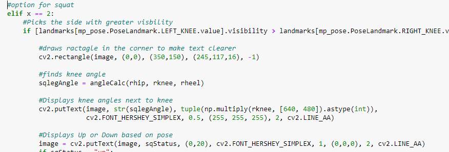

Machine Learning Form Corrector

Introduction
When I played tennis or worked out a large emphasis was placed on the form because it can improve performance and decreases the risk of an accident. However, there existed very few personal items to ensure this. I was also learning OpenCV at the time so I thought to create a program that could do just that.
The program works by identifying body parts and their relative location on the screen using Google's Machine Learning Mediapipe library. From there I found the relative angle and coordinate system of each joint in relation to another. That information could then be used to detect the user's form and notifies the user on how to correct it to follow the selected action.
I later created a Machine Learning program that can get data from any set of movements, detect what part of the movement the user is in, and predict the correct form. This machine learning code is not just limited to this project becuase it can be used to predict and detect the accuracy of any constant movement.
Setting up MediaPipe and OpenCV
First, I started by using OpenCV, a computer vision library, which can access the webcam and create text and images on to the video feed. So far I have it displaying video from my webcam and creating a rectangle in the corner of the screen for future use.
Then with some more code I set up Mediapipe, connected the feed to it, and created the joints.
Getting the data
The pose feature on Mediapipe can track all these points on the body and provides 4 data points for each of the 31 points. The x, y, and z coordinate as well as the visibility of a point. So for the data of the wrist point I recieved.
x: 0.6215062141418457
y: 1.4665732383728027
z: -1.093034029006958
visibility: 0.15121504664421082
All these values update several times every second as the hand moves, so I have several data points to choose from.
I then created a function that can be used to find the angle between two points centered on another by finding the inverse tangent of the x and y coordinates
I can also find the distance between any point by subtracting the x, y, or z coordinates using NumPy to separate the arrays. From there I can scale each coordinate up to the 640, 480 screen to get pixel measurements.
However, this measure is useless without a reference because the distance changes based on a person's distance from the camera. So, I need to scale it to a constant value. I based the measurements on eye width because it remains constant based on height and weight.
With this information I have everything I need to determine the kind of action is made by constantly looking at the pose's data to see if the current data matches it.
Pose Detection
From here I wanted to create 2 basic models for different actions a squat and a push up. I choose these 2 because they were mostly stable actions that I could repeat to check for accuracy. I could keep creating new ones, but it was repetitive and boring so I decided to create a to learn every other action.
Determining the correct pose
Once the user selects this option the side with the best visibility is constantly chosen to create the measurement so they can be the most accurate at any time.
This next piece of code uses the angle of the knee to find out if a person is in the up or down position.
Then if it is up it compares the x distance between the heel landmarks to that of the shoulders and eyes. If it is above or below a certain threshold it marks what is wrong on the screen and shows a message.
It then does the same thing when it's in the "down" position and tests for back angle and how far the knees are bent. To alert the user of any problems that joint is highlighted and a message stays on the screen until it is fixed.
The code for the push up is almost the same with new angle positions and messages.

This is how it looks when it is working
ML For New Poses
Creating more poses is generally simple, but I did not want to keep coding the same thing over and over and I could never code every single workout and movement so I decided to create a machine learning model to do the work for me. The machine learning model uses data from the user's action, so if their forehand was originally off it will keep telling them to do it the wrong way. I was thinking that it would be solved in one of two ways. If it was a shared database of data that sample size would wear away most personal differences. The second would be to train the model while working with an instructor and the app is used to help you in your offtime to reach that perfect form.
It works when the user selects a new motion that has not been created before. The name that they enter is then saved and an excel table is created from it allowing future use for everyone. Then the person starts doing the motion and the data is collected each time they do it. That data is then used to create a machine learning model from each of the data points.
Gathering Data for Machine Learning
First, I got all of the x, y, z, and visibility values of all of the body parts when the user is doing the new action and uploaded it into an excel file. A column is then added with the movement type to differentiate the coordinates of different types.
Mediapipe finds the values several times a second so I have hundreds of coordinates to choose from.
I only had the coordinates, so I found the main 10 angles by creating 10 new columns that go through every row and find the angle by calculating the values of some of the items in the row. It does that by getting the column value of the part that is needed and creating an array of the x and y coordinates to put into the angleCalc function I built a while back.
All of the values in the table come from several sets, so I needed to find where each interval started and ended so I could apply the machine learning only to those values. I began by getting the values of the current row so I could use it to compare to other rows until I found a similar one. I decided to use 3 values rather than the 10 angles or the total because this was in a good position to still differentiate different rows, but not too strict to block every slight difference. From there I began numbering each item in a row starting from 1 until that row matches the first row. Then it breaks out of the for loop and finds the next interval and numbers the new interval starting from 1 again. I added 10 to the i value because a lot of the rows are closely related and I did not want to code to keep choosing a shorter interval every time because several rows next to each other satisfy the difference requirement. From this, I can now tell where each interval starts and the position of each row on an interval.
Then I needed to be able to tell what position the user was in so I could use it in the machine learning to distinguish the values. There were many ways to do this, but I choose to do this by finding the greatest change between the minimum and maximum of an angle. I did this because it could still notice the difference between the top and bottom of something like a squat if the user was waving both arms. I then used that angle's column to find the median, max, and min.
I then used the median to detect if the user was in the "up" or "down" position of their movement by seeing if the current value was greater or lower than the median. The location statement uses the table value rather than the landmark value because it requires less code and the table is constantly being updated even when being tested.
I also used the previous range data to find the static angles. This was important because it detects the angles that should always stay the same in the movement. So it could alert the user if they were doing something like shifting their foot while swinging or weren't keeping their back straight on a pushup.
I found which the rows had the max and mean. I used an interval of the rows because the values around 10 away from a value stay consistent and I needed as many accurate data points as I could get for the machine learning set. I then used the interval number column that I created before to assign the values that match the interval as max or min.
Then I exported all the data labeled as max and all the data labeled as min separately to then add to the machine learning model.
I chose to use a random forest model because it works the best with larger data sets and was the most accurate out of the ones I tested. I then ran trained the model and saved it to use in a future part.
Predicting Poses
The message goes through all of the angles labeled as static and compares it with the current angle measure. If they do not match it highlights the joint and creates a message based on the part.
The next notification checks the main angle ( the one with the greatest change) and makes sure that it is around the max or min when the action is in the up or down position.
With the accuracy of the current coordinates compared to the predicted ML model I create new rows to test if it improves it. The new row alters a non-static angle by increasing or decreasing it by 5 and checking if the accuracy improves. If it does then a message is created to have the user move to that location and the joint is highlighted.
In this video I did a simple action to reduce error. The motion was prevoisly trained and this was the result
I created this code to fit multiple movement applications. Currently this code is focused one main angle to reduce the calculations, however if optimized it can track multiple angles and different parts of their movement all at once providing a full picture. This means with a couple of changes it can work to process and correct any repeated movement.
Mechanical Design CS and Electronics